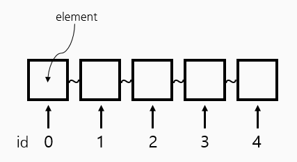
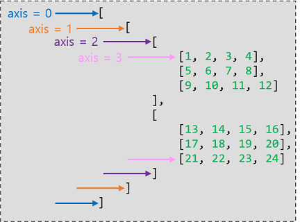

이번 실습강의는 Tensor를 다루는 법에 대한 전반적인 내용에 대한 강의입니다.
p.s. 모든 코드에서 eval() method를 사용할 때 eval(session=sess) 로 session 인자를 넘겨주거나 sess=tf.InteractiveSession() 으로 대화형 세션 객체를 생성해야 오류가 뜨지 않습니다.
Simple ID array and slicing

t = np.array([0., 1., 2., 3., 4., 5., 6.])np.array좀더 살펴보기
Slicing을 까먹었다면 여기서 확인하기import numpy as np t = np.array([0., 1., 2., 3., 4., 5., 6.]) pp.pprint(t) print(t.ndim) # rank print(t.shape) # shape print(t[0], t[1], t[-1]) print(t[2:5], t[4:-1]) print(t[:2], t[3:])# result array([0., 1., 2., 3., 4., 5., 6.]) 1 (7,) 0.0 1.0 6.0 [2. 3. 4.] [4. 5.] [0. 1.] [3. 4. 5. 6.] <-- 이 부분까지 이해 됬다면 slicing 개념은 완벽히 이해한것.
2D Array
t = np.array([[1., 2., 3.], [4., 5., 6.], [7., 8., 9.], [10., 11., 12.]]) pp.pprint(t) print(t.ndim) # rank print(t.shape) # shape# result array([[1., 2., 3.], [4., 5., 6.], [7., 8., 9.] [10., 11., 12.]]) 2 (4, 3)
Shape, Rank, Axis
import tensorflow as tf sess = tf.Session() t = tf.constant([1, 2, 3, 4]) tf.shape(t).eval(session=sess)# result array([4], dtype=int32) <-- rank = 1 -->
t = tf.constant([[1, 2], [3, 4]]) tf.shape(t).eval(session=sess)# result array([2, 2], dtype=int32) <-- rank = 2 -->
t = tf.constant([[[1, 2, 3, 4], [5, 6, 7, 8], [9, 10, 11, 12]], [[13, 14, 15, 16], [17, 18, 19, 20], [21, 22, 23, 24]]]) tf.shape(t).eval(session=sess)# result array([2, 3, 4], dtype=int32) <-- rank = 3 -->
Axis

axis = -1 은 특별히 마지막 axis를 가리키기도 한다.
위 예제에서의 axis = -1 은 axis = 3 와 같다.
Matmul vs multiply
import tensorflow as tf sess = tf.Session() matrix1 = tf.constant([[1., 2.], [3., 4.]]) matrix2 = tf.constant([[1.], [2.]]) print("Matrix 1 shape", matrix1.shape) print("Matrix 2 shape", matrix2.shape) tf.matmul(matrix1, matrix2).eval(session=sess)# result Matrix 1 shape (2, 2) Matrix 2 shape (2, 1) array([[ 5.], [ 11.]], dtype=float32)
(matrix1 * matrix2).eval(session=sess)# result array([[ 1., 2.], [ 6., 8.]], dtype=float32)
※주의 : 행렬 곱셈과 일반적인 곱셈의 결과는 완전히 다르다
Broadcasting
Matrix shape이 다르더라도 연산이 가능하게 되는 것을 broadcasting이라 한다.
import tensorflow as tf sess = tf.InteractiveSession() matrix1 = tf.constant([[1., 2.]]) matrix2 = tf.constant(3.) # [[3., 3.]]으로 broadcasting됨 (matrix1 + matrix2).eval()# result array([[ 4., 5.]], dtype=float32) <-- tensor의 shape이 달라도 shape을 맞춰준다 -->
matrix1 = tf.constant([[1., 2.]]) matrix2 = tf.constant([3., 4.]) # [[3., 4.]]으로 broadcasting됨 (matrix1 + matrix2).eval()# result array([[ 4., 6.]], dtype=float32)
matrix1 = tf.constant([[1., 2.]]) matrix2 = tf.constant([[3.], [4.]]) # [[3., 3.], [4., 4.]]으로 broadcasting됨 (matrix1 + matrix2).eval()# result array([[ 4., 5.], [ 5., 6.]], dtype=float32)
Reduce mean
tf.reduce_mean([1, 2], axis=0).eval()# result 1 <-- 1.5가 아닌 1인 이유는 tensor의 dtype이 integer이기 때문 -->
축(axis)을 정하지 않고 reduce_mean
x = [[1., 2.], [3., 4.]] tf.reduce_mean(x).eval()# result 2.5 <-- 모든 축에 대하여 평균을 구함 -->
축(axis)을 정하여 reduce_mean
tf.reduce_mean(x, axis=0).eval() tf.reduce_mean(x, axis=1).eval() tf.reduce_mean(x, axis=-1).eval()# result1 array([2., 3.], dtype=float32) # result2 array([ 1.5, 3.5], dtype=float32) # result3 array([ 1.5, 3.5], dtype=float32)
Reduce sum
x = [[1., 2.], [3., 4.]] tf.reduce_sum(x).eval() # 1 tf.reduce_sum(x, axis=0).eval() # 2 tf.reduce_sum(x, axis=-1).eval() # 3 tf.reduce_mean(tf.reduce_sum(x, axis=-1)).eval() # 4# result1 10.0 <-- 축(axis)을 정하지 않은 경우 모든 element에 대한 sum을 구함 --> # result2 array([ 4., 6.], dtype=float32) # result3 array([ 3., 7.], dtype=float32) # result4 5.0 <-- array([3., 7.])의 평균 -->
Argmax
가장 큰 element의 위치(index)를 return해준다.
x = [[0, 1, 2], [2, 1, 0]] tf.argmax(x, axis=0).eval()# result array([1, 0, 0], dtype=int64) <-- 0과 2를 비교한 것 중 큰 index인 1반환--> <-- 1과 1을 비교한 것 중 큰 index인 0반환 (같으면 index가 작은 쪽)--> <-- 2와 0을 비교한 것 중 큰 index인 0반환-->
tf.argmax(x, axis=1).eval()# result array([2, 0], dtype=int64) <-- tf.argmax(x, axis=-1 ) 일때도 결과는 같다-->
Reshape**
t = np.array([ [ [0, 1, 2], [3, 4, 5] ], [ [6, 7, 8], [9, 10, 11] ] ]) t.shape# result (2, 2, 3) <-- rank = 3 -->
tf.reshape(t, shape=[-1, 3]).eval() # -1은 개수를 알 수 없기 때문에 ALL을 뜻 함# result array([[ 0, 1, 2], [ 3, 4, 5], [ 6, 7, 8], [ 9, 10, 11]]) <-- rank = 2 -->
tf.reshape(t, shape=[-1, 1, 3]).eval()# result array([[[ 0, 1, 2]], [[ 3, 4, 5]], [[ 6, 7, 8]], [[ 9, 10, 11]]]) <-- rank = 3 -->
Reshape (squeeze, expand)
squeeze 더 알아보기
tf.squeeze([[0], [1], [2]]).eval()# result array([0, 1, 2], dtype=int32) <-- rank가 2에서 1로 줄어든다 -->
expand 더 알아보기
tf.expand_dims([0, 1, 2], 1).eval()# result array([[0], [1], [2]], dtype=int32) <-- rank가 1에서 2로 증가한다 -->
One hot
tf.one_hot([[0], [1], [2], [0]], depth=3).eval()# result array([[[ 1., 0., 0.]], [[ 0., 1., 0.]], [[ 0., 0., 1.]], [[ 1., 0., 0.]]], dtype=float32)
지정된 depth 만큼의 shape으로 one_hot encoding이 일어나고,
int -> float 의 형 변환과 rank + 1 이란 변화가 생긴다.
의도치 않게 증가된 rank를 다시 tf.reshape 로 바꿀 수 있다.
t = tf.one_hot([[0], [1], [2], [0]], depth=3) tf.reshape(t, shape=[-1, 3]).eval() # shape의 parameter개수가 rank개수# result array([[ 1., 0., 0.], [ 0., 1., 0.], [ 0., 0., 1.], [ 1., 0., 0.]], dtype=float32)
Casting
형 변환이 필요할 때 사용하는 method.
tf.cast([1.8, 2.2, 3.3, 4.9], tf.int32).eval()# result array([1, 2, 3, 4], dtype=int32)
tf.cast([True, False, 1 == 1, 0 == 1], tf.int32).eval()# result array([1, 0, 1, 0], dtype=int32) <-- accuracy 계산 시 True의 개수를 세야 할 때 int로 casting 후 사용 가능 -->
Stack
x = [1, 4] y = [2, 5] z = [3, 6] # Pack along first dim. tf.stack([x, y, z]).eval()# result array([[1, 4], [2, 5], [3, 6]], dtype=int32)
tf.stack([x, y, z], axis=1).eval() tf.stack([x, y, z], axis=0).eval() tf.stack([x, y, z], axis=-1).eval()# result array([[1, 2, 3], [4, 5, 6]], dtype=int32) array([[1, 4], [2, 5], [3, 6]], dtype=int32) array([[1, 2, 3], [4, 5, 6]], dtype=int32)
Ones and Zeros like
기존의 tensor와 같은 shape의 1 또는 0으로 채워진 tensor 생성
x = [[0, 1, 2], [2, 1, 0]] tf.ones_like(x).eval()# result array([[1, 1, 1], [1, 1, 1]], dtype=int32)
x = [[0, 1, 2], [2, 1, 0]] tf.zeros_like(x).eval()# result array([[0, 0, 0], [0, 0, 0]], dtype=int32)
Zip
python 내장 함수. 링크를 참조 https://wikidocs.net/32#zip
for x, y in zip([1, 2, 3], [4, 5, 6]): print(x, y)# result 1 4 2 5 3 6
for x, y, z in zip([1, 2, 3], [4, 5, 6], [7, 8, 9]): print(x, y, z)# result 1 4 7 2 5 8 3 6 9